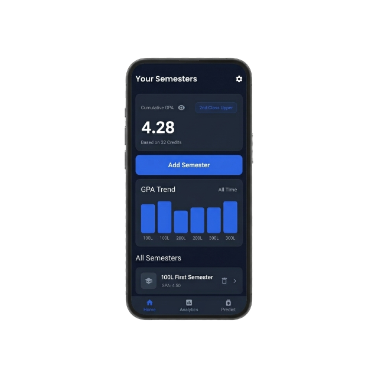

android
Android
v1.0.0 (Play Store)Highly adaptive design rendering perfectly across smartphones and tablets. Integrates with dynamic theme engines and Google Cloud Sync.
Bring the harmony of focused aesthetics and predictive metrics to all your devices. Your calculations, projections, and simulator sandboxes sync seamlessly via secure cloud storage.

Optimized native clients engineered for performance and fluid UI interactions.
Highly adaptive design rendering perfectly across smartphones and tablets. Integrates with dynamic theme engines and Google Cloud Sync.
The ultimate workspace for intense study and planning sessions. Supports split-screen layouts, local PDF exports, and offline mode.
Fluid gesture-based interfaces optimized for mobile scholars. Includes interactive Home Screen widgets and Apple Silicon iPad support.
Follow these instructions to safely deploy GPac across your active environments.
Need help setting up? Find direct answers to common deployment questions below.
GPac is designed to support different university grading systems. Whether your institution uses a 4.0, 5.0, or a custom grading scale, you can configure the calculator to match your school's requirements.
Yes. Your academic record isn't locked after you create it. You can revisit previous semesters, update grades or course information, and GPac will automatically recalculate your cumulative GPA.
Absolutely. Whether you're calculating your first semester GPA or tracking your progress toward graduation, GPac is designed to grow with your academic journey.
Most of GPac's core features, including GPA calculation, prediction, and analytics, are designed to work locally on your device. Some future features may require an internet connection.